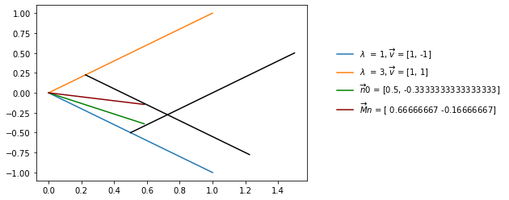

Lecture 11: Linear algebra II
Lecture overview
1. Eigenvalues and eigenvectors
What are eigenvalues and eigenvectors?
A number \(\lambda\) is an eigenvalue of matrix \(\textbf{M}\) if there exists a non-zero vector, \(\vec{v}\), that satisfies the equation:
Every non-zero vector \(\vec{v}\) satisfying this relation is an (right) eigenvector of \(\mathbf{M}\) belonging to the eigenvalue, \(\lambda\).
Finding eigenvalues of a matrix
To find the eigenvalues of a matrix, we can rearrange the above equation, using the distributive law for matrix multiplication:
where \(\mathbf{I}\) is the identity matrix, and \(\vec{0}\) is a vector of zeros.
This suggests that \(\vec{v}\) is a vector of zeros, \(\vec{v}=\vec{0}\).
But we've said this is not the case.
So this last step must not be valid \(\implies (\mathbf{M} - \lambda\mathbf{I})\) is not invertible.
Therefore the determinant of \((\mathbf{M} - \lambda\mathbf{I})\) must be zero! \(\implies\) solve for \(\lambda\) without \(\vec{v}\)
The determinant of the \(n\times n\) matrix \((\mathbf{M} - \lambda\mathbf{I})\) is an \(n^{th}\) degree polynomial in \(\lambda\), the roots of which are the eigenvalues of the matrix \(\mathbf{M}\): \(\lambda_1,\lambda_2,...\lambda_n\).
For example, in the \(n=2\) case
so that
The two roots can be found using the quadratic formula
Finding the determinant of \((\mathbf{M} - \lambda\mathbf{I})\) becomes trickier for larger matrices.
But there are some helpful properties of determinants that come in handy
The eigenvalues of a diagonal or triangular matrix are simply the diagonal elements
Similarly, the eigenvalues of a block diagonal or triangular matrix are the eigenvalues of the submatrices along the diagonal
Finding eigenvectors of a matrix
Now how do we find the eigenvectors?
If \(\vec{v}\) is an eigenvector of the matrix \(\mathbf{M}\) corresponding to the eigenvalue \(\lambda\), it must satisfy:
We would like to just solve for \(\vec{v}\)
But we can't since \(\mathbf{M} - \lambda\mathbf{I}\) is singular.
Instead we need to write out the system of equations represented by \(\mathbf{M}\vec{v} = \lambda \vec{v}\) and solve for one variable after another.
For a \(2 \times 2\) matrix \(\mathbf{M}\) with eigenvalues \(\lambda_1\) and \(\lambda_2\) you can find an eigenvector for \(\lambda_1\), for example, by solving
The system of equations determining the eigenvector associated with \(\lambda_1\) is then
Note from the matrix form above that we can multiply \(\vec{v} = \begin{bmatrix} v_1 \\ v_2 \end{bmatrix}\) by any constant and that will also be a solution.
So there are an infinite number of eigenvectors associated with an eigenvalue and we can set one of the elements to an arbitrary value. Let's choose \(v_1 = 1\).
Now we have just one unknown, \(v_2\), so choose either of the equations and solve for \(v_2\)
Multiplying both entries by \(m_{12}\) we therefore have \(\vec{v} = \begin{bmatrix} m_{12} \\ \lambda_1 - m_{11}\end{bmatrix}\) associated with \(\lambda_1\).
Worked example
To make this more concrete, we will work through an example of finding the eigenvalues and eigenvectors of a matrix
Let's find the eigenvalue(s) for the matrix:
Now solving \(|\mathbf{M}-\lambda \mathbf{I}| = 0\) for \(\lambda\)
and so the eigenvalues are \(\lambda_1=1\) and \(\lambda_2=3\).
Let's next find the corresponding eigenvectors:
\(\lambda_1=1\): An eigenvector must satisfy the equation:
This gives us two equations:
and
The first tells us that
If we let \(v_1=1\), \(v_2\) must then equal \(-1\) and, thus, \(\begin{bmatrix} 1 \\ -1 \end{bmatrix}\) is an eigenvector corresponding to \(\lambda=1\).
Now try showing yourself that \(\begin{bmatrix} 1 \\ 1 \end{bmatrix}\) is an eigenvector corresponding to \(\lambda=3\).
Now let's take a look at this graphically.
import numpy as np
import matplotlib.pyplot as plt
M = [[2, 1], [1,2]]
# First initialize functiosn for plotting the eigenvectors
l1, l2 = 1, 3
e1, e2 = [1, -1], [1, 1]
fe1, fe2 = lambda x: np.array(x * e1[1]/e1[0]), lambda x: np.array(x * e2[1]/e2[0])
# Plot the eigenvectors
x = np.linspace(0, 1, 25)
fig, ax = plt.subplots()
ax.plot(x, fe1(x), label=f"$\lambda$ = {l1}, $\overrightarrow v$ = {e1}")
ax.plot(x, fe2(x), label=f"$\lambda$ = {l2}, $\overrightarrow v$ = {e2}")
# Now plot some initial condition
n0 = [1/2, -1/3]
fn0 = lambda x: np.array(x * n0[1]/n0[0])
ax.plot(x[0:15], fn0(x[0:15]), label=f"$\overrightarrow n0$ = {n0}", c='green')
# And then multiply the initial condition by the matrix
Mn = np.array(M) @ np.array(n0)
fMn = lambda x: np.array(x * Mn[1]/Mn[0])
ax.plot(x[0:15], fMn(x[0:15]), label=f"$\overrightarrow Mn$ = {Mn}", c='darkred')
# Draw parallel lines
shift = 0.5
ax.plot(x + shift, fe2(x) + fe1(shift), color='black')
shift = 0.225
ax.plot(x + shift, fe1(x) + fe2(shift), color='black')
ax.legend(frameon=False, loc=(1.1,0.35))
<matplotlib.legend.Legend at 0x7f96026e31f0>

And if we keep multiplying by \(\mathbf{M}\) we see that the direction of \(\mathbf{M}^{m}\vec{n}\) approaches that of the eigenvector associated with the eigenvalue of largest absolute value, and the length of \(\mathbf{M}^{m}\vec{n}\) changes by a factor equal to the magnitude of that eigenvalue.